Théo Thonat thonat@adobe.com Adobe
France
Iliyan Georgiev igeorgiev@adobe.com Adobe
UK
François Beaune beaune@adobe.com Adobe
France
Tamy Boubekeur boubek@adobe.com Adobe
France
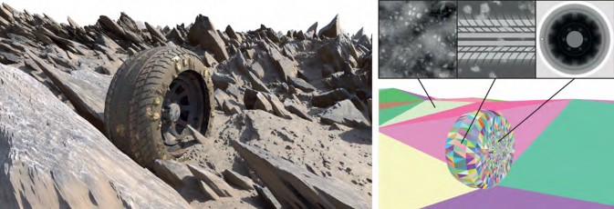
High-performance ray tracing of triangle meshes equipped with displacement maps is a challenging task. Existing methods either rely on pre-tessellation, taking full advantage of the hardware but with a poor memory/quality tradeoff, or use custom displacement- centric acceleration structures, preserving all the geometric details but being orders of magnitude slower. We introduce a method that efficiently probes the displacement-map space to find ray-surface intersections without relying on pre-tessellation. Our method com- bines inverse displacement mapping and on-the-fly surface-bound computation. It employs a novel data structure that provides tight displacement bounds over rectangular regions in the displacement- map space. We demonstrate the effectiveness of our approach in a production GPU path tracer. It can achieve over an order of magni- tude speed-up in render time compared to state of the art in the most challenging real-time path-tracing scenarios, while maintaining a low memory footprint.
Permission to make digital or hard copies of part or all of this work for personal or classroom use is granted without fee provided that copies are not made or distributed for profit or commercial advantage and that copies bear this notice and the full citation on the first page. Copyrights for third-party components of this work must be honored. For all other uses, contact the owner/author(s).
SA Conference Papers ’23, December 12–15, 2023, Sydney, NSW, Australia
© 2023 Copyright held by the owner/author(s). ACM ISBN 979-8-4007-0315-7/23/12.
https://doi.org/10.1145/3610548.3618182
GPU Ray Tracing, Displacement Mapping
ACM Reference Format:
Théo Thonat, Iliyan Georgiev, François Beaune, and Tamy Boubekeur. 2023. RMIP: Displacement ray-tracing via inversion and oblong bounding. In SIGGRAPH Asia 2023 Conference Papers (SA Conference Papers ’23), December 12–15, 2023, Sydney, NSW, Australia. ACM, New York, NY, USA, 11 pages. https://doi.org/10.1145/3610548.3618182
Displacement mapping is a powerful mechanism to enrich base 3D meshes with high-frequency details and mesostructures, of- floading most of the resulting representation to a (commonly high- resolution) 2D map providing, for any point of the surface, a dis- placement value. At rendering time, the base geometry is deformed according to the map, to recover the full-resolution shape. As such, large parts of the shape processing and management can be per- formed on the low-resolution base surface, leveraging the random- accessible nature of the displacement map to provide easy level of detail, compression, and filtering. In practice, real-time displace- ment mapping is often made available through rasterization engines,
where hardware tessellation triggers the displacement process at every frame. Unfortunately, for real-time ray tracing, displacement mapping is typically applied as a preprocess, producing a high- resolution mesh to be maintained during rendering which still suffers from subsampling artifacts in real-world scenarios.
Modern GPU architectures offer hardware support for ray trac- ing [Sanzharov et al. 2020], which enables interactive physically- based rendering based on Monte Carlo integration, in an aim to bridge the gap between real-time and offline rendering. Primarily designed for triangle meshes, this new programmable GPU pipeline draws its efficiency from an underlying acceleration structure (AS), organized in a top-level component (TLAS) and a bottom level one (BLAS). However, such bounding volume hierarchies require explicit realization of the high-resolution geometry, i.e., after tessel- lation and displacement, which quickly fails at reproducing accu- rately complex displacement maps over arbitrary macro domains, entails a large memory footprint, is intractable when the displace- ment content is dynamic, and may ultimately not be possible when tiling the displacement over the domain.
×
Tessellation-free displacement mapping (TFDM) has been re- cently proposed as an alternative to explicit displacement mesh- ing [Thonat et al. 2021]. It achieves full accuracy but exhibits limited execution performance. We tackle this problem by introducing a new data structure, dubbed RMIP, which allows to quickly discover the displacement map subregions that are likely to intersect a ray. It supports subregions with rectangular shape, enabling the propa- gation of tight bounds between the 2D displacement space and the 3D ray space, to quickly narrow down the search for intersection in a front-to-back manner. By often reducing the number of traversal steps by over an order of magnitude, our method can achieve a speed-up of 10 or more over TFDM, while preserving full accu- racy (see Fig. 1) and remaining orthogonal to both the hardware TLAS/BLAS traversal and the final ray-surface intersection test.
Ray-traced displacement maps. Offline rendering of scenes with complex geometry sparked many extensions of the Reyes archi- tecture, driven by caching and ray reordering [Christensen et al. 2003]. Lazy building of local accelerations structures was explored by Hunt et al. [2007]. Hanika et al. [2010] extended it to two-level acceleration structures, where the lower levels are populated by structures resulting from on-demand surface tessellation. A similar scheme has been used in the context of vector displacement map- ping [Harada 2015]. Performance in these setups critically depends on ray reordering to maximize the reuse of the local structures. In contrast, we use an implicit acceleration structure unique to each ray, generating the micro-structure only at the scale of the displacement texels, thus free of ray reordering constraints.
The Razor system [Djeu et al. 2011] allows each ray to indepen- dently choose its appropriate geometric resolution. It relies on lazy evaluation and caching of local tessellations at discrete levels of detail (LoDs) that are interpolated at intersection time to generate fractional LoDs. Our per-ray traversal structure allows intersecting the displaced surface directly at fractional LoDs, since we generate the surface explicitly only during the final steps of the traversal.
Real-time displacement mapping. In the context of rasterization, numerous methods have been proposed to render surface details in real time without tessellation. In particular, probing a height map to find approximate intersections with the meso-surface has been extensively studied. Parallax mapping [Kaneko et al. 2001; Tatarchuk 2006] offsets the intersection in texture space based on the height content. Sampling the height field using ray-marching allows finding a pair of points above and below the surface, which is the starting point for several refinement methods, for example using the secant method [Yerex and Jägersand 2004], using binary search with relief mapping [Policarpo et al. 2005], or using a minmax texture [Lee et al. 2009]. Height maps can also be pre-processed to encode empty space near the surface, allowing to safely ray-march with adaptive steps. Numerous safety shapes has been proposed, such as spheres [Hart 1996; Donnelly 2005], cones [Dummer 2006; Policarpo and Oliveira 2007], and cylinders [Baboud et al. 2011]. An in-depth overview of meso-surface real-time rendering can be found in the survey of Szirmay-Kalos et al. [2009]. All those methods approximate the tangent space by a locally flat height field. This makes the rendered surface view-dependent when the base surface has curvature, making those methods unsuitable for our ray tracing context.
Another type of approaches consists in pre-computing intersec- tions with the meso-surface from a dense sampling of query rays and compressing them in a suitable way for real time rendering. Early methods rely on singular value decomposition [Wang et al. 2003, 2004]; recent works use a small set of neural nets with spatially variant weights, stored in textures, and mapped onto a bounding volume [Kuznetsov et al. 2021, 2022]. Although such methods han- dle a variety of meso-geometries beyond scalar displacement, their encoding requires expensive pre-processing, with rendering quality proportional to the memory consumption. In contrast, our method requires minimal pre-processing and storage, while preserving the full geometric and visual complexity of the displacement content.
Inverse mappings. Mapping the vicinity of a 3D surface back to its texture space allows transforming ray tracing of complex, possibly volumetric, meso-structures to simpler 2D tracing. In the context of shell mapping, Porumbescu et al. [2005] create a thin vol- umetric layer around the surface by extruding the mesh outward in the normal directions. Rays intersecting this volume can be mapped to texture space, where traditional real-time height-field-marching techniques can be applied, although inheriting their shortcomings. Since the mapping from world to texture space is non-linear, special care is required to handle the tracing of curved ray paths to avoid missing intersections from the height field [Jeschke et al. 2007]. In the context of displacement mapping, Patterson et al. [1991] project intersections between the ray and a bounding volume back to texture space following the directions of displacement. They use these projected intersections to conservatively track the ray in texture space which greatly reduces the search region for in- tersection. Their method, and its extension [Logie and Patterson 1995], is limited to a number of analytical base surfaces; we utilize this mapping and extend inverse displacement mapping to triangle meshes.
Implicit acceleration structures for ray tracing. The memory bur- den of accelerating the ray tracing of highly detailed geometry has
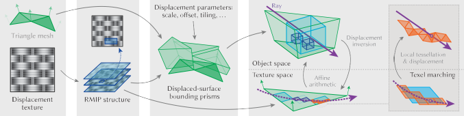

lead to the development of implicit acceleration structures. Simi- larly to our work, Heidrich and Seidel [1998] use affine arithmetic to estimate 3D bounds in the context of procedural shaders with analytical base surfaces and displacement. The work of Smits et al. [2000] allows ray tracing of displaced triangle meshes without tes- sellation, marching through bounding prisms defined from the base triangle barycentric space. We also use bounding prisms and linear marching, although we apply them only at specific steps of our traversal. Bounding prisms and barycentric grids were also used by Maggiordomo et al. [2023] to efficiently compress displacement content, in a way that can be ray-traced with hardware support without pre-tessellation. In our case, base triangles generally do not coincide with faces of the bounding prisms (see Fig. 2).
Carr et al. [2006] use minmax mipmaps to efficiently ray-trace geometry images, building an implicit quad-tree bounding volume hierarchy in 𝑢𝑣 space. Similarly, the work of Oh et al. [2006], later im- proved by Tevs et al. [2008], use a maximum displacement mipmap as an implicit hierarchical data structure, restricted to height fields on planar surfaces.
Most relevant to our work is the tessellation-free displacement mapping (TFDM) method of Thonat et al. [2021]. They use a minmax mipmap both to locally bound the displacement and as an accelera- tion structure for ray traversal in texture space. Displaced-surface bounds are generated on-the-fly from the quad-tree nodes using affine arithmetic and tested against the ray. Analytic ray-surface intersection is performed upon reaching a texel-sized node. TFDM supports fractional LoD and displacement tiling, and achieves great pre-computation and memory savings. Unfortunately, these sav- ings come at the cost of substantial computational burden during rendering due to loose bounds and inefficient space culling leading to long traversals. Our work addresses these shortcomings to sig- nificantly improve performance without sacrificing the benefits of TFDM.
We propose a method for direct ray tracing against a triangle mesh displaced by a scalar texture map, avoiding the explicit displacement of a fine pre-tessellation. Ray-geometry intersection algorithms op- erate by iteratively shrinking the interval along the ray through space culling, typically by traversing the ray through a spatial struc- ture that bounds the geometry at multiple scales. Maintaining tight bounds is key to achieving good performance as it minimizes the number of costly traversal steps required to descend to a scale where analytic intersection testing is possible. Tessellation-free displacement mapping (TFDM) [Thonat et al. 2021] operates in tex- ture space, traversing a minmax mipmap quad-tree. While simple, this scheme suffers from slow interval tightening and long traver- sal, for three reasons: (1) The tree structure is fixed—it does not depend on the displacement data; (2) The texture-space footprint (i.e., projection) of a ray segment is generally anisotropic but the tree nodes only provide conservative displacement bounds over square-shaped regions; (3) Hierarchy pruning is solely based on a simple binary (yes/no) feedback from the intersections of the loose 3D-box bounds derived from the nodes.
The main idea behind our method is to track tight ray-interval bounds simultaneously in 2D texture space and 3D object space. It is inspired by the observation that each space has access to unique information that can be leveraged to effectively tighten the bound in the other space: Subdividing a 2D ray bound (i.e., a region in texture space bounding the curved ray projection) yields tighter scalar displacement bounds and thus tighter 3D-surface bounds. In- tersecting those 3D bounds then tightens the valid ray interval and shrinks its 2D footprint. This ping-pong scheme can tighten bounds rapidly and thus speed up space culling to reduce the number of tra- versal steps; Fig. 3 shows an illustration in flatland. Patterson et al. [1991] explored the scheme for analytical base surfaces; we extend it to triangle meshes with interpolated displacement directions.
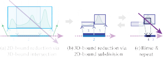
→
→
For the above-described scheme to be effective, we need to not only map 2D ray-interval bounds to 3D geometry bounds but also 3D ray-intersection intervals back to 2D. For the 2D 3D mapping, we employ affine arithmetic as Thonat et al. [2021]. For the 3D 2D mapping, we use displacement inversion to project the endpoints of ray-intersection intervals to axis-aligned bounds in texture space. These 2D bounds can have highly anisotropic rectangular shapes; conservatively snapping them to the predefined square-shaped nodes of a minmax mipmap would yield valid but excessively loose bounds for the displacement inside them. To that end, we intro- duce a novel data structure, dubbed rectangular minmax image pyramid (RMIP), that provides displacement bounds for arbitrary axis-aligned rectangular regions in texture space. Crucially, RMIP divorces us from rigid traversal hierarchies and liberates us to cull space efficiently based on the specific ray-triangle configuration.
Algorithm overview. Figure 2 illustrates our method. Given a triangle mesh equipped with per-vertex displacement normals and a displacement texture, we first construct the RMIP structure which stores scalar displacement bounds over rectangles of various size and shape in texture space. Then for each triangle we compute a prism that tightly bounds the displaced 3D surface arising from it; we build a bounding volume hierarchy over all prisms.
During ray tracing, each intersected prism triggers our per- triangle traversal algorithm, laid out in Alg. 1. It first projects the ray-prism intersection interval to texture space. This 2D projection is a curve which may need to be split into sub-curves so that each can be bounded by the axis-aligned rectangle spanned by its end- points; the bounding rectangles are pushed to a stack. The traversal loop then pops rectangular bounds from the stack and alternates be- tween (1) computing 3D-surface bounds from displacement bounds over rectangles and intersecting them (Fig. 3a), and (2) projecting the 3D ray-intersection intervals and subdividing the rectangles that bound them (Fig. 3b). When the current 2D bound becomes small enough, we switch to marching along the displacement texels it spans, locally reconstructing the displaced 3D surface for each
1: function IntersectRMIP(𝑟𝑎𝑦, 𝑡𝑟𝑖𝑎𝑛𝑔𝑙𝑒, 𝑝𝑟𝑖𝑠𝑚, 𝑟𝑚𝑖𝑝)
( ( ) )
2: 𝑝𝑜𝑖𝑛𝑡𝑠 = sort intersect 𝑟𝑎𝑦, 𝑝𝑟𝑖𝑠𝑚
( ) ←
3: 𝑏𝑜𝑢𝑛𝑑𝑠 = inverse displacement 𝑝𝑜𝑖𝑛𝑡𝑠, 𝑡𝑟𝑖𝑎𝑛𝑔𝑙𝑒 Section 4.1
( ) ←
4: 𝑡𝑢𝑟𝑛𝑖𝑛𝑔 𝑝𝑜𝑖𝑛𝑡𝑠 = zero 𝑢𝑣 derivative 𝑟𝑎𝑦, 𝑡𝑟𝑖𝑎𝑛𝑔𝑙𝑒 Section 4.2
()
←
( ) ←
5: 𝑏𝑜𝑢𝑛𝑑𝑠 = split 𝑏𝑜𝑢𝑛𝑑𝑠, 𝑡𝑢𝑟𝑛𝑖𝑛𝑔 𝑝𝑜𝑖𝑛𝑡𝑠 Section 4.2 6: while 𝑏𝑜𝑢𝑛𝑑𝑠 is not empty do Stack of 2D ray bounds 7: 𝑏𝑜𝑢𝑛𝑑 = 𝑏𝑜𝑢𝑛𝑑𝑠.pop
8: if 𝑏𝑜𝑢𝑛𝑑 is smaller than 𝑚𝑎𝑟𝑐ℎ𝑖𝑛𝑔 𝑠𝑐𝑎𝑙𝑒 then
←
9: for 𝑡𝑒𝑥𝑒𝑙 in texel marching(𝑏𝑜𝑢𝑛𝑑) do Section 4.3
10: if ℎ𝑖𝑡 = displaced surface intersect(𝑟𝑎𝑦, 𝑡𝑒𝑥𝑒𝑙 ) then
( )
) ←
11: return ℎ𝑖𝑡 ← Front-to-back traversal, terminate on first hit 12: 𝑏𝑜𝑥 = surface bounds(𝑡𝑟𝑖𝑎𝑛𝑔𝑙𝑒, 𝑏𝑜𝑢𝑛𝑑, 𝑟𝑚𝑖𝑝 Section 5 13: if not ℎ𝑖𝑡𝑠 = intersect 𝑟𝑎𝑦, 𝑏𝑜𝑥 then
14: continue
15: 𝑏𝑜𝑢𝑛𝑑 = reduce(𝑏𝑜𝑢𝑛𝑑, ℎ𝑖𝑡𝑠 ) ← Section 4.3
16: for 𝑓 𝑟𝑜𝑛𝑡, 𝑏𝑎𝑐𝑘 in split(𝑏𝑜𝑢𝑛𝑑 ) do ← Section 4.3
17: 𝑏𝑜𝑢𝑛𝑑𝑠.push(𝑏𝑎𝑐𝑘, 𝑓 𝑟𝑜𝑛𝑡 ) ← Back first so front is pop earlier
texel and testing it for intersections. Unlike TFDM [Thonat et al. 2021], thanks to traversing in a front-to-back manner along the ray, we can terminate as soon as we find an intersection.
Using bounding prisms provides a good compromise between intersection complexity and tightness, especially since it achieves space subdivision—the displaced-surface bounds of neighboring triangles do not overlap in 3D (see Fig. 2c). In the supplemental document we discuss the geometry of the prisms, how to construct them, and how to intersect them to obtain the initial bounds for the traversal. An even more important advantage of using prisms over axis-aligned 3D boxes is the guarantee that every 3D location inside them can be successfully projected to texture space. We discuss this aspect in Section 4 below; there, we also formally describe our rectangular texture-space ray bounds, how our traversal tightens those bounds iteratively, and how we perform texel marching. In Section 5 we present our novel RMIP data structure that provides tight scalar displacement bounds over rectangles in texture space. In Section 6 we present results of our method, along with an ablation study around different traversal components.
Obtaining the tightest possible displacement bounds along a ray requires the ability to track its projection in 2D texture space. This projection—along the displacement-direction field defined by the interpolated vertex normals—is a curve (see Fig. 2d), and deriving an explicit 1D parametrization for it is difficult. Luckily, a simple implicit form for the curve is easy to obtain. That form, in combi- nation with point-wise displacement inversion, allows us to bound the curve using axis-aligned rectangles. Below we describe how we project the endpoints of 3D ray intervals to 2D locations and how we derive tight curve-bounding rectangles from them using the implicit form. We also show how to use that form to subdivide those bounds and to march along the exact displacement texels crossed by the ray.
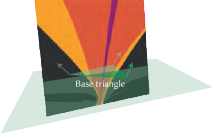 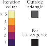
Figure 4: Number of steps required for projecting 3D points onto a base triangle by numerically inverting Eq. (2) (lower is better), visualized here in false color for 3D locations on a plane orthogonal to the base triangle. Not all 3D points can be successfully projected; however, we only deal with points located inside a prism around the triangle, and these are guaranteed to fall inside the triangle (see Section 4.1).
A triangle with linearly interpolated positions P(𝑢, 𝑣) and normals
N(𝑢, 𝑣) at texture coordinates 𝑢𝑣 maps texture space to a 3D surface
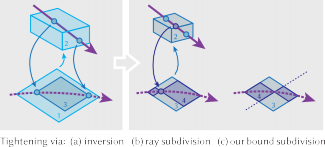
S(𝑢, 𝑣) = P(𝑢, 𝑣) + ℎ(𝑢, 𝑣) N(𝑢, 𝑣)
(1)
This is a quadric in texture space with partial derivatives
=
𝑢
𝑢
, (4)
∥N(𝑢, 𝑣) ∥
r𝜓 l
rdet (P , N(𝑢, 𝑣), D) + det (P(𝑢, 𝑣) − O, N , D)l
which is a result of displacing P by an amount ℎ in the direction N.
𝑢
The displacement lines are depicted in Fig. 3a. Projecting a point
𝜓𝑣 det (P𝑣, N(𝑢, 𝑣), D) + det (P(𝑢, 𝑣) − O, N𝑣, D)
+
O 𝑡 D at distance 𝑡 along a ray with origin O and direction D into texture space requires inverting this mapping. That is, we look for the 𝑢𝑣 coordinates whose displacement line intersects the point:
(P(𝑢, 𝑣) − (O + 𝑡 D)) × N(𝑢, 𝑣) = 0. (2)
Note that this is a vector equation. In the context of shell mapping, Jeschke et al. [2007] provided an analytic inverse of it, as a (scalar) cubic equation w.r.t. the ray parameter 𝑡 . However, we found out that an iterative Newton-based numerical inversion of Eq. (2) is both faster and more stable. As seen in Fig. 4, a few iterations are typically sufficient to reach convergence.
Figure 4 also shows that the displacement inverse is not defined for every 3D point. The key advantage of using a prism as a 3D bounding primitive over a simple axis-aligned box is that it is fully contained inside the convergence region, providing the guarantee that all our projections will fall inside the base triangle.
We now have the ability to project the endpoints of a ray interval to texture space. The rectangle spanned by these projections will bound the 2D-interval curve if the curve’s partial derivatives w.r.t.
𝑢 and 𝑣 are non-zero, i.e., if the curve does not change its principal direction inside the rectangle, as shown by Patterson et al. [1991]. We therefore must identify such “turning” points and subdivide the curved interval into sub-intervals with non-zero derivatives that can each be easily rectangle-bounded. The projected ray has a simple implicit form, allowing us to retrieve those points using closed-form computations. That form is derived by transforming Eq. (2) to remove its dependency on the ray parameter 𝑡 :
𝜓 (𝑢, 𝑣) = det (P(𝑢, 𝑣) − O, N(𝑢, 𝑣), D) = 0. (3)
where P𝑢 , P𝑣 , N𝑢 , and N𝑣 , are the partial derivatives of the interpo- lated base position and normal—all constant inside a base triangle. Each 𝜓𝑢 = 0 and 𝜓𝑣 = 0 defines a line in tex-
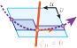
ture space. We can retrieve the zero-derivative points by intersecting the projected ray with those two lines, which boils down to solving two quadratic equations. This yields at most
four such points, meaning at most four subdivisions of the initial interval. In practice we never end up subdividing more than once.
Ray-interval projection. Every time we perform ray-box intersec- tion in 3D, we invert the displacement for the intersection-interval endpoints (Fig. 5a). This can yield a new 2D ray bound that is tighter than the initial one, sometimes drastically. Rays that are near-parallel to the displacement directions have 2D projections smaller than the size of a texel. Traversal-time complexity is thus constant for such rays as they can be directly tested against the displaced surface within that texel.
Bound subdivision. Bound tightening via interval projection is beneficial only for some rays. We need explicit subdivision to guar- antee that bounds eventually shrink to a size small enough for direct intersection. To that end, Patterson et al. [1991] project the 3D intersection-interval midpoint to texture space to form the two subdomains (Fig. 5b). However, in our case the 3D bounds are com- puted using range arithmetic, providing no tightness guarantee.
Thus the midpoint texture-space projection can lie anywhere along the projected ray, which can lead to unbalanced splitting and ar- bitrarily long traversal. We instead split the domain directly in texture space: we use the implicit form to compute the intersection between the interval curve and the line splitting the longer side of the bound in the middle (Fig. 5c). This scheme culls half the bound area and puts a strict upper bound on the number of traversal steps.
The final stage of our traversal routine is a direct intersection test with a local reconstruction of the displaced surface. This step is triggered when the 2D bounds become small enough, typically the size of a texel [Thonat et al. 2021].
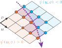
However, we found that it is more efficient to stop the traversal earlier, and march along the projected ray through the texels it crosses. The sign of the implicit form 𝜓 (3) at each texel corner indicates from which edge the ray leaves the texel, as illustrated in the inline figure on the right.
We identify two reasons why switching to direct intersection earlier is more efficient. Firstly, our 2D bounds are arbitrary rectan- gles that are not aligned with the texels of the displacement map. That is, a texel is typically covered by multiple rectangles along the ray, which leads to multiple, redundant direct-intersection tests for that texel. Texel marching amortizes this redundancy. Secondly, the (finest) resolution of our RMIP structure may be smaller than that of the input displacement map. Once the 2D ray bounds become smaller than the RMIP resolution, the scalar displacement bounds returned by RMIP stop getting tighter. Texel marching allows to avoid querying the RMIP below this threshold size. In Section 6 we discuss the performance impact of the rectangle-size threshold at which we switch to texel marching.
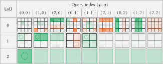
( )
Figure 6: Layout of our RMIP structure as a 2D texture with multiple layers (columns) and mip levels (rows). Each pixel of every sub-texture represents the top-left corner of a query and stores the minmax displacement value over a region of size 2𝑝, 2𝑞 . We show example queries in color, with top- left corners marked by circles. Green queries are contained fully inside the unit texture square; orange queries cross the square, enabling the use of Alg. 2 with wrapping queries. Semi-transparent layers are copies of other layers within the same mip level, enabling hardware sampling at fractional level of detail (LoD), i.e. interpolation across levels (rows).
≤ − ≤ −
≤ ≤ ( )
( )
𝑥,𝑦
We instead follow the approach of Amir et al. [2007], who noted that any 2D range query can be decomposed into four, possibly overlapping sub-queries whose side lengths are powers of two. It is therefore sufficient to pre-compute the minmax values for all such sub-queries. Such a query is specified by its side length 2𝑝, 2𝑞 , with 0 𝑝, 𝑞 log2 𝑁 , and the position of its top left corner 𝑥, 𝑦 , with 0 𝑥 < 𝑁 2𝑝 , and 0 𝑦 < 𝑁 2𝑞 . We assume the input displacement map is square with power-of-two side 𝑁 . We denote by 𝐻 𝑝,𝑞 the precomputed minmax query with size (2𝑝, 2𝑞 ) and position (𝑥, 𝑦). The query for a rectangle with arbitrary size (𝑤, ℎ)
and top-left position (𝑥, 𝑦) is the minmax of four 𝐻 values:
𝑅𝑀𝑄 (𝑥, 𝑦, 𝑤, ℎ) = minmax 𝐻 𝑝,𝑞, 𝐻 𝑝,𝑞
, 𝐻 𝑝,𝑞
, 𝐻 𝑝,𝑞
, (5)
The axis-aligned bounds of ray intervals in texture space can have arbitrary rectangular shape, assuming the rays are uniformly dis- tributed in 3D. Recall that our traversal requires bounds for the scalar displacement inside these rectangles. A minmax mipmap, the
where
(𝑝, 𝑞) = ⌊log2(𝑤, ℎ)⌋,
𝑥,𝑦
𝑚𝑥 ,𝑦
𝑚𝑥 ,𝑚𝑦
𝑥,𝑚𝑦
standard data structure used to retrieve such bounds, would provide excessively loose bounds for highly anisotropic queries. To that end, in this section we introduce a novel minmax data structure that we call rectangular minmax image pyramid (RMIP), which provides bounds for arbitrarily shaped rectangles.
The 2D range minimum query (RMQ) problem asks for the min- imum value over axis-aligned rectangular regions within a discrete 2D grid. This problem has been well studied in the literature, and solutions typically rely on pre-possessing the input grid into a data structure, with different trade-offs in complexity between pre- processing time, query time, and storage [Fischer and Heun 2011; Brodal et al. 2012]. Solutions to the 2D RMQ problem with constant- time query and asymptotic linear pre-processing time and storage are known [Yuan and Atallah 2010], but the amount of intermedi- ate data structures and indirections required for a query make the practicality of an implementation unclear for real time rendering.
(𝑚𝑥 , 𝑚𝑦 ) = (𝑥, 𝑦) + (𝑤, ℎ) − (2𝑝, 2𝑞 ).
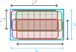
( + )
( + )
We have 1 log2 𝑁 2 possible query sizes, and for each we have 𝑁 2 possible positions, so there are 𝑁 2 1 log2 𝑁 2
total minmax 𝐻 values. We assemble the values for each query size
( )
2𝑝, 2𝑞 into a 2D grid, at power-of-two scales. We pack all grids into one multi-layer, multi-level texture that maps efficiently onto triangle meshes. This texture, depicted in Fig. 6, is what we call our RMIP structure; Alg. 2 shows pseudo-code for querying it.
( + )
In the supplemental document we describe how we construct the RMIP from a given displacement map, and how we practically reduce its memory footprint from 𝑁 2 1 log2 𝑁 2 to 𝑁 2, i.e. to the order of a classical mipmap. We also discuss details about bounding continuously interpolated (displacement) signals, tiled over the 𝑢𝑣 plane, and fractional-LoD support.

1: function RMIP_RMQ(𝑢𝑣min, 𝑢𝑣max, 𝜆, 𝑟𝑚𝑖𝑝)
2: 𝑟 = textureSize(𝑟𝑚𝑖𝑝, 0) ← RMIP resolution at LoD 0 3: 𝑝min = ⌊𝑢𝑣min · 𝑟 ⌋, 𝑝max = ⌈𝑢𝑣max · 𝑟 ⌉ ← Query pixel corners 4: 𝑠 = ⌊log2 (𝑝max − 𝑝min ) ⌋ ← Query log size in pixels 5: 𝑖 = 𝑠.𝑥 + 𝑠.𝑦 · rmip array stride ← RMIP texture array layer index 6: 𝑢𝑣min = (𝑝min + 0.5) / 𝑟 ← Adjust to pixel center 7: 𝑢𝑣mid = (𝑝max + 0.5 − 2𝑠 ) / 𝑟 ← Bottom-left sub-query’s top right 8: 𝑏1 = textureLoD(𝑟𝑚𝑖𝑝, 𝑢min, 𝑣min, 𝑖, 𝜆) ← Top-left sub-query 9: 𝑏2 = textureLoD(𝑟𝑚𝑖𝑝, 𝑢mid, 𝑣min, 𝑖, 𝜆) ← Top-right sub-query 10: 𝑏3 = textureLoD(𝑟𝑚𝑖𝑝, 𝑢min, 𝑣mid, 𝑖, 𝜆) ← Bottom-left sub-query 11: 𝑏4 = textureLoD(𝑟𝑚𝑖𝑝, 𝑢mid, 𝑣mid, 𝑖, 𝜆) ← Bottom-right sub-query
12: return minmax(𝑏1, 𝑏2, 𝑏3, 𝑏4 )
For micro-structure rendering, Wang et al. [2020] proposed a similar data structure, also based on that of Amir et al. [2007]. Our RMIP structure encodes a richer set of queries, supporting tiled signals and fractional LoDs, and has a GPU-friendly implementation. Moreover, our compression scheme is better suited to ray-tracing applications where bound tightness is crucial at early traversal steps. Our scheme reduces tightness mostly on queries smaller than the RMIP resolution, which only occur late in the traversal. In contrast, squared precomputed queries yield looser bounds at all scales.
We implemented our method on CPU and GPU, using Embree [Wald et al. 2014] and Vulkan Ray Tracing [Khronos 2020]. Our two-level approach (find base triangle, then intersect it) is supported by those ray-tracing frameworks through custom geometry. It requires a bounding box for each custom primitive—per bounding prism in our case, and a custom intersection program—our hybrid traversal. We present results of our method integrated in the Adobe Mer- cury Rendering Engine. We show examples with high-resolution displacement maps, a range of tiling factors, and variety of base surfaces, seen in Fig. 8. All results were produced on a desktop ma- chine with a 16-core AMD Ryzen 9 5950X CPU and an NVIDIA RTX 3080 GPU with 10 GB of memory. We evaluate our method along
three axes: performance, visual quality, and memory footprint.
×
×
Tessellation-free displacement. Our main competitor is the TFDM method [Thonat et al. 2021]. As we share a common tessellation-free framework, ours has identical inputs and outputs, and yields the same visual quality. We therefore compare performance and mem- ory consumption. As seen in Table 1, ours significantly outperforms TFDM in an equal-memory setup, with an average speed-up of 5 (with a 3 standard deviation) over all scenes. We also show that we can reach their level of performance with only a fraction of the memory cost. In Fig. 10, we show that our method performs increas- ingly better when pushing the displacement scaling or displacement tiling, confirming its better asymptotic traversal complexity. Finally, Fig. 9 shows that our ray-adaptive hierarchies reduce the number of considered 2D bounds during traversal (i.e., the size of the while loop in Alg. 1) by an order of magnitude over TFDM.
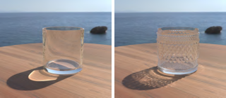
Editability. As our data structures are efficient to compute on the GPU, displacement editing is as easy as in TFDM. Displacement modifications trigger an RMIP rebuild. With our compression, this is equivalent to building a minmax mipmap, and takes approximately 5ms for a 4k displacement map using a naive implementation. On the other hand, modifying the displacement parameters triggers pre-computations only for the base triangles, most notably the bounding prisms, which takes less than 1ms on all our examples.
Ablation study. We study several components of our method. First, we swap out RMIP for a standard minmax mipmap in our traversal. Such a mipmap can be used to compute bounds on an arbitrary axis-aligned rectangle by finding the smallest four neigh- boring texels whose union contains the rectangle [Greene et al. 1993], as used for GPU occlusion culling [Shopf et al. 2008]. In Fig. 11 we show that in our ray-tracing context, at equivalent mem- ory consumption, the bounds obtained from the mipmap degrades performance compared to RMIP. This is because the queries are made over arbitrary rectangles bounding ray projections, and the mipmap performs poorly for such generally anisotropic queries.
Second, we rely on texel marching to both amortize query-texel misalignments and compensate for the limited RMIP resolution. We use a marching scale parameter to control the 2D-size threshold below which we switch from bound subdivision to texel march- ing. In Fig. 11 we show that for every RMIP resolution there is a marching-scale sweet-spot that gives the best performance. Intu- itively, a large scale leads to a displacement-map traversal without much hierarchical acceleration, which is costly for high-resolution maps. Conversely, a small marching scale means the query-texel misalignment and limited RMIP resolution are no longer amortized. Finally, we study the efficiency of 2D-bound tightening through point-wise displacement inversion (Fig. 5a). While inversion is crit- ical for initializing the traversal, its usage during traversal (line 15 in Alg. 1) is optional since 2D-bound subdivision (Fig. 5c) is enough to guarantee consistent bound shrinkage. We show in Fig. 12, that while inversion provides significant performance improvement on average on CPU, its benefit on GPU is much less pronounced. We hypothesize that this difference is due to the SIMD nature of the GPU execution model. Indeed, while numerical inversion is rela- tively fast, it remains a costly operation that provides a significant region reduction only in certain configurations, e.g., when the ray hits an on-the-fly 3D AABB from the top or bottom. So since our traversal is heavily ray-dependant, it is unlikely that multiple tra- versals within an execution warp encounter a beneficial inversion.
×
Scene | #Tri | Disp. | Tiling TFDM (1×) | |
Mem. | GPU | |||
Alien Sphere Basket | 0.9k 4.8k | 2k 2k | 6 × 8 21Mb | 56ms 117ms |
Creature
53k
Diving Helmet 2.5k
Medieval Helmet 2.3k
4k 1 × 1
4k 1 × 1
5 × 5
21Mb
×186 ×91
Mem.↓ GPU↑
×0.048
Mem.↓ GPU↑
×2.7
Mem.↓ GPU↑
×1.3 ×3.4
×30
Mem.↓ GPU↑
×2.7
85Mb 115ms ×40
×235
×232
×67
×0.048 ×5.0 ×1.3 ×6.3 ×30
×5.0
Elven Armor Ninja Head Terracotta Roof Desert Tire Glass
0.8k
8.7k
128
9k 2.2k
85Mb 33ms ×30
2k 5 × 5
4k 2 × 2
21Mb 42ms ×111
0.012
×95 ×
85Mb 53ms ×37
×132
×93
×0.012
×4.3
×1.6 ×7.8 ×7.6 ×9.3
×0.012
×0.048
×2.5
×2.5
×1.6
×2.7
×1.3
×3.0
×1.6
×3.2
×7.6 ×3.5
×3.4
×7.6
×30
×2.8
×4.1
4k × 3 252, 6 × 1
2k 2 × 2
2k 5 × 5
21Mb 182ms ×103
21Mb 27ms ×97
×340 ×0.048 ×6.1 ×1.3 ×9.2 ×30
×7.7
2k 1 × 1
256Mb 606ms ×10
42Mb 41ms ×51
×1151
×69
×12
×0.012
×0.048
×2.2
×0.66
×6.5
×1.3 ×3.0 ×30
×2.4
×2.5
×0.32
×1.3
×2.7
×11
×7.6
×16
×9.6
×2.7
Uniform Low-res. RMIP RMIP High-res. RMIP
Limitations & future work. When using displacement maps with moderate resolution or limited tiling, and keeping the displacement content static, then combining pre-tessellation, pre-displacement, and hardware ray tracing remains the method of choice, even if ac- curate displacement meshing can be very challenging depending on the actual UV layout of the base domain. A number of design choices in our approach are heavily biased by our application scenario— dynamic GPU displacement tracing. Nevertheless, we believe that RMIP could be instrumental in a number of other level-of-detail problems, including approximation models for physics simulation and high-resolution geo mapping.
Conclusion. By coupling displacement inversion with range arith- metic, our method establishes an efficient bidirectional communica- tion channel between texture space and 3D space, enabling efficient and ray-dependent texture-space pruning when seeking an inter- section. As a result, RMIP displacement ray tracing is on average five times faster than the state of the art at equal image quality.
The authors thank Luc Chamerlat for helping create our beautiful test scenes, Andréa Machizaud for his reliable assistance with the renderer, Thomas Caissard for helping with photon mapping, and the anonymous reviewers for their their useful feedback.
Amihood Amir, Johannes Fischer, and Moshe Lewenstein. 2007. Two-dimensional range minimum queries. In Combinatorial Pattern Matching: 18th Annual Symposium, CPM 2007, London, Canada, July 9-11, 2007. Proceedings 18. Springer, 286–294.
Lionel Baboud, Elmar Eisemann, and Hans-Peter Seidel. 2011. Precomputed safety shapes for efficient and accurate height-field rendering. IEEE transactions on visu- alization and computer graphics 18, 11 (2011), 1811–1823.
Gerth Stølting Brodal, Pooya Davoodi, and S Srinivasa Rao. 2012. On space efficient two dimensional range minimum data structures. Algorithmica 63 (2012), 815–830. Nathan A Carr, Jared Hoberock, Keenan Crane, and John C Hart. 2006. Fast GPU ray tracing of dynamic meshes using geometry images.. In Graphics Interface, Vol. 2006.
Per H. Christensen, David M. Laur, Julia Fong, Wayne L. Wooten, and Dana Batali. 2003. Ray Differentials and Multiresolution Geometry Caching
for Distribution Ray Tracing in Complex Scenes. Computer Graphics Fo- rum 22, 3 (2003), 543–552. https://doi.org/10.1111/1467-8659.t01-1-00702
arXiv:https://onlinelibrary.wiley.com/doi/pdf/10.1111/1467-8659.t01-1-00702 Peter Djeu, Warren Hunt, Rui Wang, Ikrima Elhassan, Gordon Stoll, and William R.
Mark. 2011. Razor: An Architecture for Dynamic Multiresolution Ray Tracing.
ACM Trans. Graph. 30, 5, Article 115 (Oct. 2011), 26 pages. https://doi.org/10.1145/
William Donnelly. 2005. Per-pixel displacement mapping with distance functions.
GPU gems 2, 22 (2005), 3.
Jonathan Dummer. 2006. Cone step mapping: An iterative ray-heightfield intersection algorithm. URL: http://www. lonesock. net/files/ConeStepMapping. pdf 2, 3 (2006), 4.
Johannes Fischer and Volker Heun. 2011. Space-efficient preprocessing schemes for range minimum queries on static arrays. SIAM J. Comput. 40, 2 (2011), 465–492.
Ned Greene, Michael Kass, and Gavin Miller. 1993. Hierarchical Z-buffer visibility. In Proceedings of the 20th annual conference on Computer graphics and interactive techniques. 231–238.
Johannes Hanika, Alexander Keller, and Hendrik P. A. Lensch. 2010. Two-Level Ray Tracing with Reordering for Highly Complex Scenes. In Proceedings of Graphics Interface 2010 (Ottawa, Ontario, Canada) (GI ’10). Canadian Information Processing Society, CAN, 145–152.
Takahiro Harada. 2015. Rendering Vector Displacement Mapped Surfaces in a GPU Ray Tracer. GPU Pro 6: Advanced Rendering Techniques (2015), 459.
John C Hart. 1996. Sphere tracing: A geometric method for the antialiased ray tracing of implicit surfaces. The Visual Computer 12, 10 (1996), 527–545.
W. Heidrich and H. Seidel. 1998. Ray-tracing Procedural Displacement Shaders. In
Graphics Interface.
Warren Hunt, William R. Mark, and Don Fussell. 2007. Fast and Lazy Build of Accel- eration Structures from Scene Hierarchies. In 2007 IEEE Symposium on Interactive Ray Tracing. 47–54. https://doi.org/10.1109/RT.2007.4342590
Stefan Jeschke, Stephan Mantler, and Michael Wimmer. 2007. Interactive Smooth and Curved Shell Mapping. In Proceedings of the 18th Eurographics Conference on Rendering Techniques (Grenoble, France) (EGSR’07). Eurographics Association, Goslar, DEU, 351–360.
Tomomichi Kaneko, Toshiyuki Takahei, Masahiko Inami, Naoki Kawakami, Yasuyuki Yanagida, Taro Maeda, and Susumu Tachi. 2001. Detailed shape representation with parallax mapping. In Proceedings of ICAT, Vol. 2001. 205–208.
Khronos. 2020. Vulkan Ray Tracing specification. https://www.khronos.org/blog/ vulkan-ray-tracing-final-specification-release
Alexandr Kuznetsov, Krishna Mullia, Zexiang Xu, Miloš Hašan, and Ravi Ramamoorthi. 2021. NeuMIP: multi-resolution neural materials. ACM Transactions on Graphics (TOG) 40, 4 (2021), 1–13.
Alexandr Kuznetsov, Xuezheng Wang, Krishna Mullia, Fujun Luan, Zexiang Xu, Milos Hasan, and Ravi Ramamoorthi. 2022. Rendering Neural Materials on Curved Surfaces. In ACM SIGGRAPH 2022 Conference Proceedings. 1–9.
L. Lee, Shih-Wei Tseng, and W. Tai. 2009. Improved Relief Texture Mapping Using Minmax Texture. 2009 Fifth International Conference on Image and Graphics (2009), 547–552.
James R Logie and John W. Patterson. 1995. Inverse displacement mapping in the general case. In Computer Graphics Forum, Vol. 14. Wiley Online Library, 261–273.
Andrea Maggiordomo, Henry Moreton, and Marco Tarini. 2023. Micro-Mesh Con- struction. ACM Transactions on Graphics (TOG) 42, 4 (2023), 1–18.
Kyoungsu Oh, Hyunwoo Ki, and Cheol-Hi Lee. 2006. Pyramidal displacement mapping: a gpu based artifacts-free ray tracing through an image pyramid. In Proceedings of the ACM symposium on Virtual reality software and technology. 75–82.
John W Patterson, Stuart G Hoggar, and James R Logie. 1991. Inverse displacement mapping. In Computer Graphics Forum, Vol. 10. Wiley Online Library, 129–139.
Fabio Policarpo and Manuel M Oliveira. 2007. Relaxed cone stepping for relief mapping.
GPU gems 3 (2007), 409–428.
Fábio Policarpo, Manuel M Oliveira, and João LD Comba. 2005. Real-time relief mapping on arbitrary polygonal surfaces. In Proceedings of the 2005 symposium on Interactive 3D graphics and games. 155–162.
Serban D. Porumbescu, Brian Budge, Louis Feng, and Kenneth I. Joy. 2005. Shell Maps.
ACM Trans. Graph. 24, 3 (July 2005), 626–633. https://doi.org/10.1145/1073204.
V. V. Sanzharov, V. A. Frolov, and V. A. Galaktionov. 2020. Survey of Nvidia RTX Technology. Program. Comput. Softw. 46, 4 (jul 2020), 297–304. https://doi.org/10. 1134/S0361768820030068
Jeremy Shopf, Joshua Barczak, Christopher Oat, and Natalya Tatarchuk. 2008. March of the Froblins: simulation and rendering massive crowds of intelligent and detailed creatures on GPU. In ACM SIGGRAPH 2008 Games. 52–101.
Brian Smits, Peter Shirley, and Michael M Stark. 2000. Direct ray tracing of displacement mapped triangles. In Eurographics Workshop on Rendering Techniques. Springer, 307–318.
László Szirmay-Kalos, Tamás Umenhoffer, Gustavo Patow, László Szécsi, and Mateu Sbert. 2009. Specular effects on the gpu: State of the art. In Computer Graphics Forum, Vol. 28. Wiley Online Library, 1586–1617.
Natalya Tatarchuk. 2006. Dynamic parallax occlusion mapping with approximate soft shadows. In Proceedings of the 2006 symposium on Interactive 3D graphics and games. 63–69.
Art Tevs, Ivo Ihrke, and Hans-Peter Seidel. 2008. Maximum mipmaps for fast, accurate, and scalable dynamic height field rendering. In Proceedings of the 2008 symposium on Interactive 3D graphics and games. 183–190.
Ingo Wald, Sven Woop, Carsten Benthin, Gregory S Johnson, and Manfred Ernst. 2014. Embree: a kernel framework for efficient CPU ray tracing. ACM Transactions on Graphics (TOG) 33, 4 (2014), 1–8.
Beibei Wang, Miloš Hašan, Nicolas Holzschuch, and Ling-Qi Yan. 2020. Example-based microstructure rendering with constant storage. ACM Transactions on Graphics (TOG) 39, 5 (2020), 1–12.
Lifeng Wang, Xi Wang, Xin Tong, Stephen Lin, Shimin Hu, Baining Guo, and Heung- Yeung Shum. 2003. View-dependent displacement mapping. ACM Transactions on graphics (TOG) 22, 3 (2003), 334–339.
Xi Wang, Xin Tong, Stephen Lin, Shimin Hu, Baining Guo, and Heung-Yeung Shum. 2004. Generalized displacement maps. In Proceedings of the Fifteenth Eurographics conference on Rendering Techniques. 227–233.
Keith Yerex and Martin Jägersand. 2004. Displacement mapping with ray-casting in hardware.. In SIGGRAPH sketches. 149.
Hao Yuan and Mikhail J Atallah. 2010. Data structures for range minimum queries in multidimensional arrays. In Proceedings of the twenty-first annual ACM-SIAM symposium on Discrete Algorithms. SIAM, 150–160.
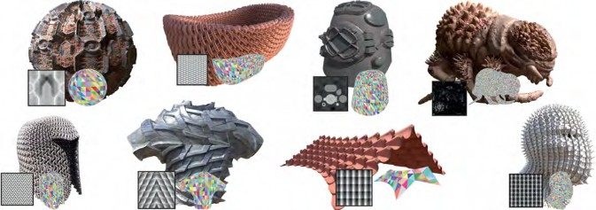
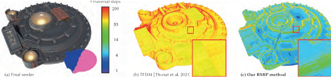
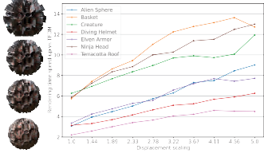 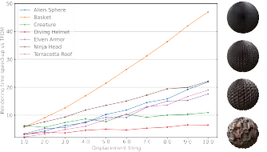
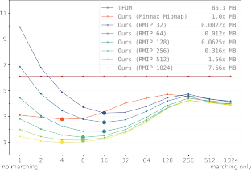
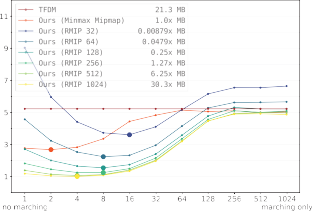
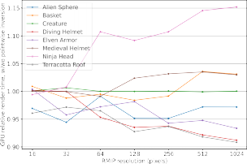 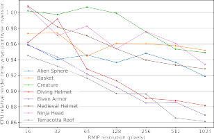